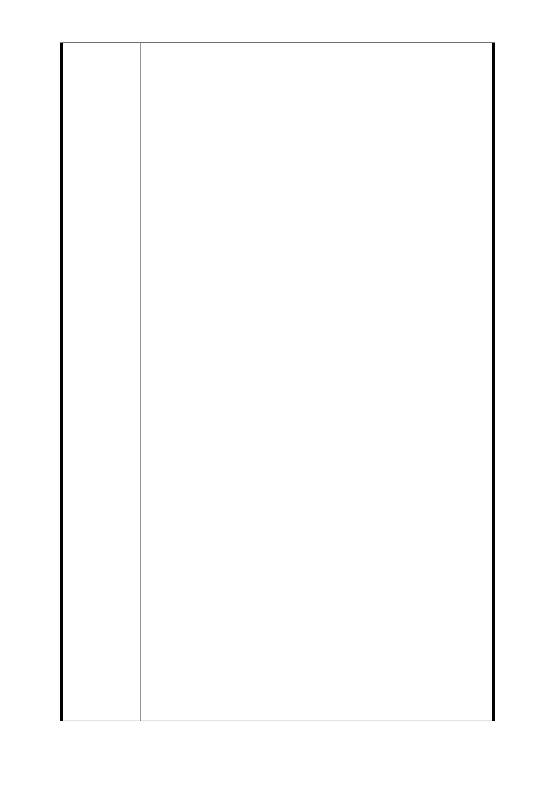

載明以信託、聯合開發、委託開發、委託經營、合作經營、
設定地上權或出租提供民間機構投資興建。故本案若屬民間
投資興建，則應於徵收計畫書明確載明土地開發方式，並將
土地所有權人對開發後之建物分配及空間規劃等要求，列入
將來招商計畫書或說明書之一部分，以保障被徵收所有權人
權益。本案基地於行政院99年2月12日院台交字第0990092595
號函核定計畫內容，採多功能使用規劃，提供零售商業、辦
公及住宅等複合型使用功能，故陳情人繼續原合法旅館之經
營，符合該計畫複合型大樓使用規劃，且旅館事業經營，屬
市政府主管事項，既涉市府其他局處之職掌，則應洽詢後復
知，不應一昧以涉及其他相關規定為理由予以搪塞，本人經
營旅館既屬市府合法發照經營，未來參與開發計畫後，則應
對原既有權益予以保障及維護，以符合憲法第15條工作權之
保障。
本人原合法經營旅館，於捷運LG01車站土地開發計畫辦理地
上改良物徵收拆除後，無法再經營，相關營業損失，依土地
徵收條例第33條規定，土地或土地改良物原供合法營業之
用，因徵收而致營業停止或營業規模縮小之損失，應給予補
償。另依土地及土地改良物徵收營業損失補償基準第三點規
定，以最近三年向稅捐機關申報之營利事業所得稅申報書上
營業淨利加利息收入減利息支出之平均計算補償，但本補償
基準為"土地及土地改良物"一併徵收者之一次性補償，被徵
收者可另購土地及改良物重新營業，但本人未來營業損失，
因配合市政府土地開發計畫期程方可恢復營業，非一年之一
次性損失，且土地徵收條例第33條為"土地或土地改良物"之
營業損失補償，依本條例之立法精神，土地未徵收者，無法
另購土地重新營業，土地改良物營業損失應按損失期程核實
補償，以維護合法經營者之法定權益，故應自拆除前無法營
業日起算至聯合開發完成恢復營業日止之停業損失，市府原
說明依基準僅一次性補償，恐有對土地徵收條例及基準錯誤
引用。但停止營業後，亦將造成員工失業，依勞動基準法第
17條規定，應發給資遣費，依補償基準營利事業所得稅申報
書上營業淨利計算補償金額，營業淨利為扣除員工薪資後之
淨利，不含勞動基準法資遣費，員工失業係因市府徵收所致，
故依法發給員工資遣費，亦應列入營業損失補償範圍。另依
本條例第34條第一項第三款規定，經營設備必需遷移者，應
發給遷移費，故本人原旅館經營之所有設施均屬本條例之經
營設備，均屬取得合法經營旅館等規定所需有之設備，應依
本條例給予補償。
陳情人陳情事項僅為維護原合法權益，均屬合情、合理、合
- 49 -